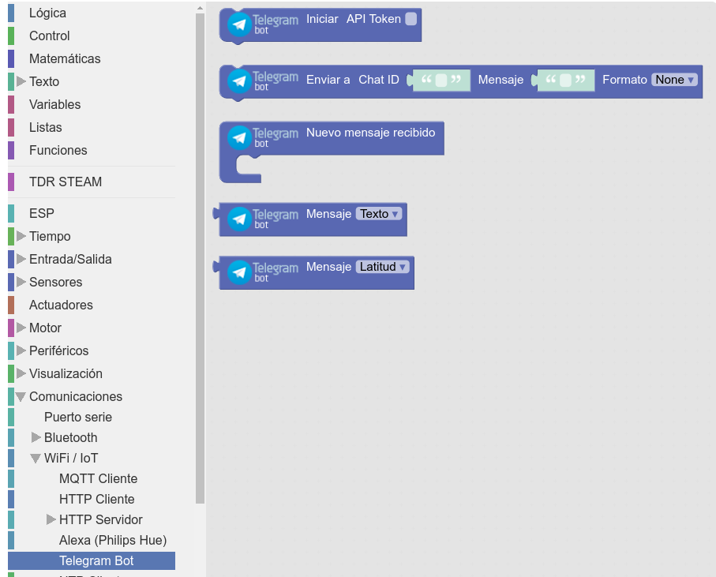

Las funcionalidades asociadas a Telegram Bot en arduinoblocks se encuentra en la siguiente dirección en las herramientas de bloques: Comunicaciones > WIFI-IoT > Telegram Bot.

Las principales funcionalidades son:
| Orden |
Funcionalidad |
|
Permite iniciar el sistema telegram en nuestra placa, aportando las credenciales del bot para poder operar. |
|
Envía a un chat un mensaje. |
|
Evento que se ejecuta en la placa cuando el bot recibe un mensaje en un grupo de telegram. |
|
Sirve para obtener de un mensaje varias cuestiones como: texto del mismo, chat ID, remitente y remitente ID. Esta orden sólo tiene sentido usarla en el evento anterior "nuevo mensaje recibido". |
|
Sirve para obtener de un mensaje la ubicación del mismo. Esta orden sólo tiene sentido usarla en el evento anterior "nuevo mensaje recibido". |